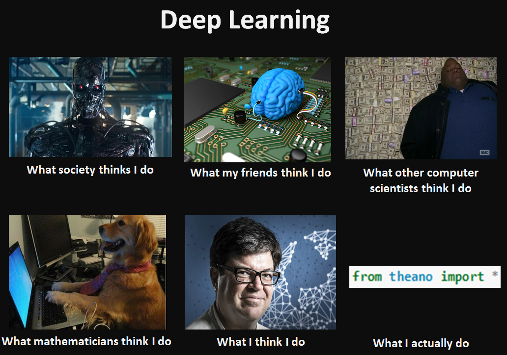

Deep learning
- Ou l'IA révélée au grand jour -
Qui suis-je ?
Alain Demenet - étudiant à 42 et co-fondateur de 42AI
Qu'allons-nous faire ?
Petit jeu
- IA ou pas ? -
Découvrons visuellement ce que cela donne :
- Jouer ! -Les mains dans le code
- Prédiction de stock price -
Mais d'abord...
Les étapes
- Trouver un problème
- Créer un jeu de données adapté
- Choisir une métrique
- Tester les méthodes existantes sur ce jeu de données
- Créer une baseline
- Identifier les limites de la baseline
- Proposer une solution qui résout ces limites
- Tester la solution
- Si ça ne marche pas, retourner en 7
- Publier/Mettre en production
Source : Régis Behmo
Mais on va raccourcir...
Conclusion
- Le deep learning est une approche de l'IA qui crée des réseaux profonds de différents types de neurone.
- L'IA demande à être programmé et donc réfléchi en amont.
Merci !
alain@42ai.fr